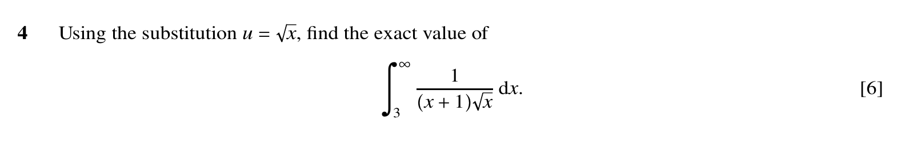
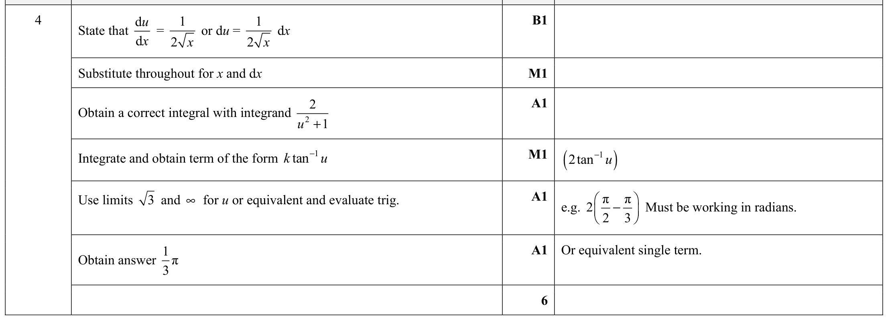

Paper 31autumn21 Q4
Integration
Self-marked exam work is useful practice evidence, but it is weaker than Checked Practice evidence. It does not award mastery by itself.

Need a first step?
Use u = sqrt(x) first: write dx = 2u du, change x + 1 to u^2 + 1, and change the lower limit to sqrt(3).
Show mark scheme image
